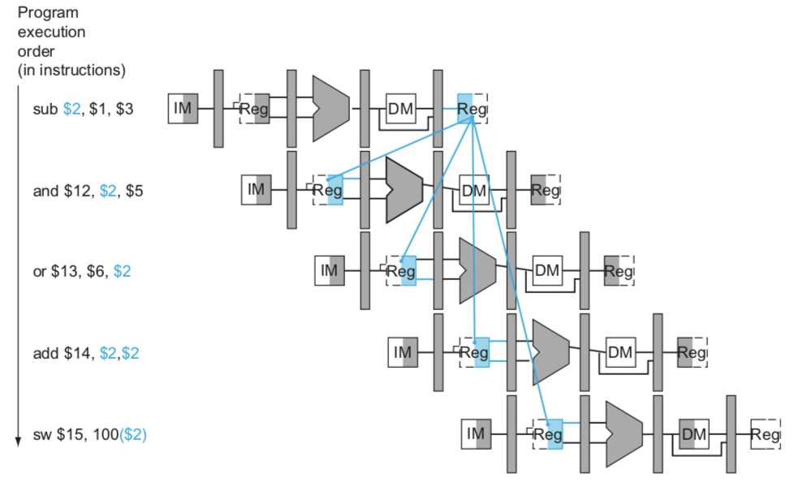
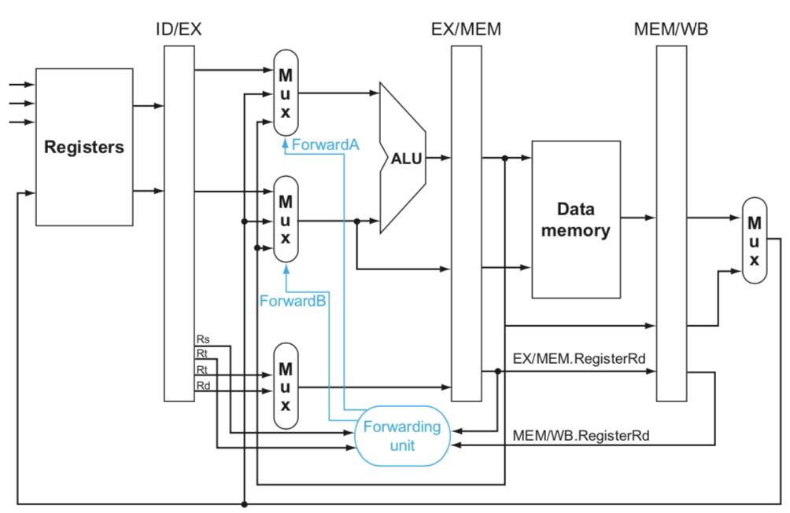
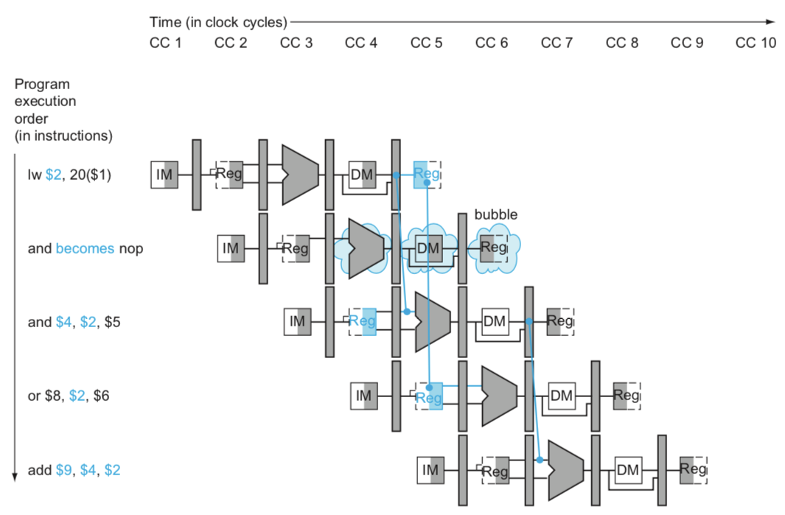
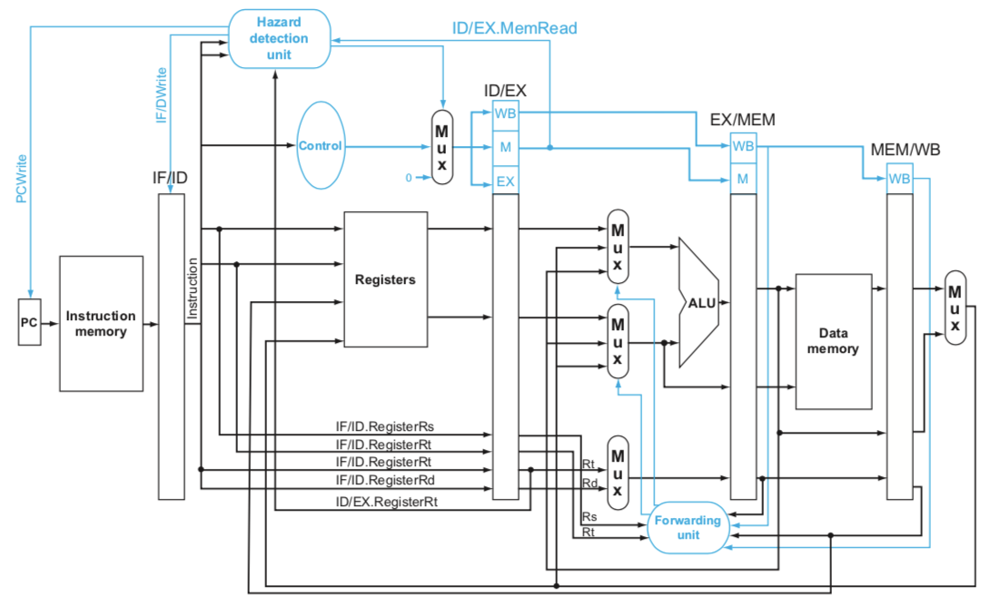

Data Hazards: Forwarding versus Stalling
지금까지 구현한 회로는 Hazard가 발생하지 않는 상황에서는 잘 동작한다. 하지만 실제 프로그램에서는 Hazard가 많이 발생하기 때문에 이를 처리할 수 있도록 고쳐서 조금 더 현실적인 프로세서를 만들어보자.
Forwarding
sub $2, $1,$3 # Register $2 written by sub
and $12,$2,$5 # 1st operand($2) depends on sub
or $13,$6,$2 # 2nd operand($2) depends on sub
add $14,$2,$2 # 1st($2) & 2nd($2) depend on sub
sw $15,100($2) # Base ($2) depends on sub
위 코드의 $2를 보자. sub에서 처음 값이 저장된 후, 다음 4 개의 instruction에서 읽기 레지스터로 사용된다. 낭비되는 사이클 없이 파이프라인에서 실행된다면 Multi-cycle-pipeline 다이어그램은 아래 이미지 (강의 교재 figure 4.52) 와 같을 것이다.

여기서 파란색은 $2를 쓰거나 읽는 부분인데, 첫 줄에서 $s2가 저장되기 전에 $2를 읽는 곳은 and, or 두 군데이다. 즉, Data Hazard가 발생했으며 이를 해결하기 위해서는 Forwarding이 필요하다. 이 경우에는 sub 의 EX 단계 ALU 결과를 and, or의 EX 입력으로 연결해 주어야 한다.
그렇다면 Data Hazard가 발생했는지는 어떻게 알 수 있을까? 그 방법은 각 단계의 사이에 있는 파이프라인 레지스터(ID/EX 등)에 저장되어 있는 레지스터 값을 비교하는 것이다. 다음 네 가지 경우이면 Data Hazard이다.
- EX/MEM의 Rd = ID/EX의 Rs
- EX/MEM의 Rd = ID/EX의 Rt
- MEM/WB의 Rd = ID/EX의 Rs
- MEM/WB의 Rd = ID/EX의 Rt
항상 저 값들을 비교하는 것은 아닌데, 간혹가다 EX/MEM이나 MEM/WB의 Rd에 값이 저장되지 않는 경우에는 포워딩을 하면 안되기 때문이다. EX/MEM과 MEM/WB에 RegWrite라는 신호를 추가하면 해결할 수 있다. 그리고 Rd가 $0(항상 값이 0이어야 하는 레지스터)이면 값을 저장해선 안되기 때문에 EX/MEM의 Rd != 0, MEM/WB의 Rd != 0 조건까지 추가한다.

위 이미지 (강의 교재 figure 4.54) 는 Forwarding을 고려해 변경한 회로이다. ALU 입력값 MUX에 포워딩 된 값이 추가되었다. 그리고 포워딩 상태를 다루기 위한 Forwarding Unit도 더해졌다.
Forwarding Unit에서 ForwardA와 ForwardB의 값을 정하는 기준을 살펴보자. 우선 ForwardA는 Rs, ForwardA는 Rt에 대한 MUX를 제어한다. 두 신호 공통으로 00은 Read Register에서 읽어온 값을 그대로 선택한다는 뜻이고, 10은 ALU 결과를 포워딩, 01은 메모리에서 읽은 값을 포워딩한다는 의미이다. 값을 결정하는 기준은 앞에서 얘기한 Data Hazard를 판단하는 네 가지 경우와 RegWrite 상태, Rd가 $0이 아닌지이다.
정리해보면 아래와 같다.
1.EX hazard:
if (EX/MEM.RegWrite
and (EX/MEM.RegisterRd ≠ 0)
and (EX/MEM.RegisterRd = ID/EX.RegisterRs)) ForwardA = 10
if (EX/MEM.RegWrite
and (EX/MEM.RegisterRd ≠ 0)
and (EX/MEM.RegisterRd = ID/EX.RegisterRt)) ForwardB = 10
2.MEM hazard:
if (MEM/WB.RegWrite
and (MEM/WB.RegisterRd ≠ 0)
and (MEM/WB.RegisterRd = ID/EX.RegisterRs)) ForwardA = 01
if (MEM/WB.RegWrite
and (MEM/WB.RegisterRd ≠ 0)
and (MEM/WB.RegisterRd = ID/EX.RegisterRt)) ForwardB = 01
Double Data Hazard
아래 코드를 보자.
add $1, $1, $2
add $1, $1, $3
add $1, $1, $4
위 코드의 경우, 세 번째 add에서 두 종류의 Hazard가 동시에 발생하는데 세 번째 add가 EX 단계에 들어가는 상황을 생각해보자. 우선, 세 번째 add의 Rs(ID/EX)가 두 번째 add의 Rd(EX/MEM)와 같기 때문에 EX Hazard가 발생했다. 또 세 번째 add의 Rs는 첫 번째 add의 Rd(MEM/WB)와도 같아서 MEM Hazard도 동시에 발생한다.
위 예시처럼 EX Hazard와 MEM Hazard가 동시에 발생했을 때 EX/MEM의 Rd와 MEM/WB의 Rd 중에서 더 최근 값인 두 번째 add의 Rd, 즉 EX/MEM의 값을 포워딩해야 한다. 다시 말해 MEM Hazard일 때 포워딩하기 위한 조건에 EX Hazard가 아니어야 한다는 조건이 더 추가되어야 한다. 이 조건을 추가한 MEM Hazard 조건은 아래와 같다.
2.MEM hazard:
if (MEM/WB.RegWrite
and (MEM/WB.RegisterRd ≠0)
and not(EX/MEM.RegWrite and (EX/MEM.RegisterRd ≠0)
and (EX/MEM.RegisterRd ≠ ID/EX.RegisterRs))
and (MEM/WB.RegisterRd = ID/EX.RegisterRs)) ForwardA = 01
if (MEM/WB.RegWrite
and (MEM/WB.RegisterRd ≠0)
and not(EX/MEM.RegWrite and (EX/MEM.RegisterRd ≠0)
and (EX/MEM.RegisterRd ≠ ID/EX.RegisterRs))
and (MEM/WB.RegisterRd = ID/EX.RegisterRt)) ForwardB = 01
Load-Use Data Hazard
Load-Use Data Hazard에 대해서는 "4.5 An Overview of Pipelining(2)" 포스팅에서 설명했으므로 자세한 설명은 일단 생략하겠다. 이러한 경우에는 무조건 Stall(대기 상태)이 한 사이클 발생하는데, 회로에서 구현하기 위해서는 Load-Use Data Hazard를 감지한 다음에 해당 instruction을 일부러 한 사이클 늦게 실행해야 한다. 다음은 파이프라인에서 Stall을 만드는 방법이다.
Load-Use Data Hazard는 아래 조건과 같이 감지할 수 있다.
if (ID/EX.MemRead and
((ID/EX.RegisterRt = IF/ID.RegisterRs) or
(ID/EX.RegisterRt = IF/ID.RegisterRt)))
stall the pipeline
How to Stall the Pipeline
- ID / EX 레지스터의 Control 값을 전부 0으로 만든다.
- Control이 전부 0이면 EX, MEM, WB에서 아무 연산도 하지 않는다.(nop : no-operation)
- PC와 IF/ID 레지스터를 업데이트 하지 않는다.
- IF 단계와 ID 단계를 한 사이클 반복한다.
- 그러면 같은 동작을 반복하므로 IF, ID도 사실상 한 사이클 동안 nop 상태라고 할 수 있다.
아래는 Load-Use Data Hazard를 위와 같은 방식으로 처리한 것을 multi-cycle pipeline diagram으로 나타낸 이미지 (강의 교재 figure 4.59) 이다.

여기서는 nop 이후에 and의 IF를 한 번 더 실행하는 것처럼 표현되었지만, 실제로는 두 번째 사이클에서 가져온 instruction을 한 사이클 대기한 뒤 EX 단계로 넘어가는 거지만 그냥 넘어가자.
Load-Use Data Hazard를 감지하는 Hazard Detection Unit을 추가한 최종 회로의 이미지 (강의 교재 figure 4.60) 를 끝으로 포스팅을 마칩니다.

Header Image created by Freepik